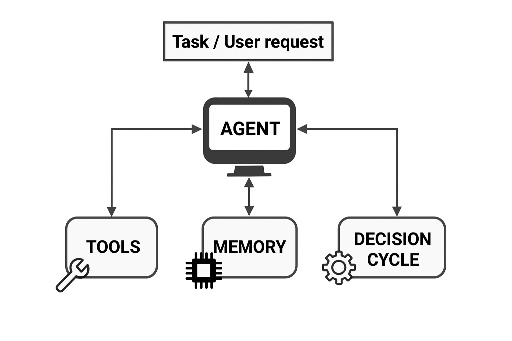
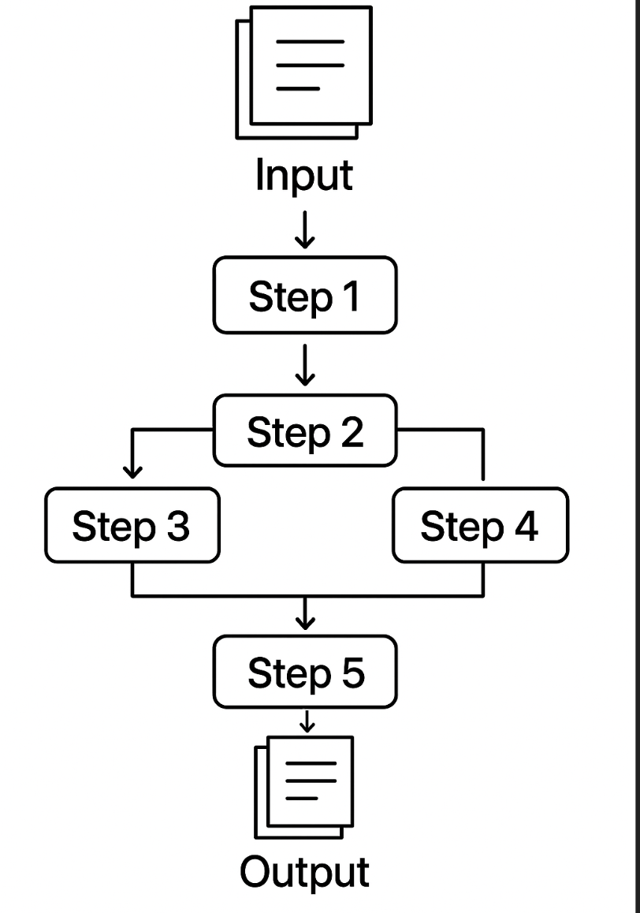
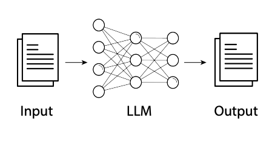
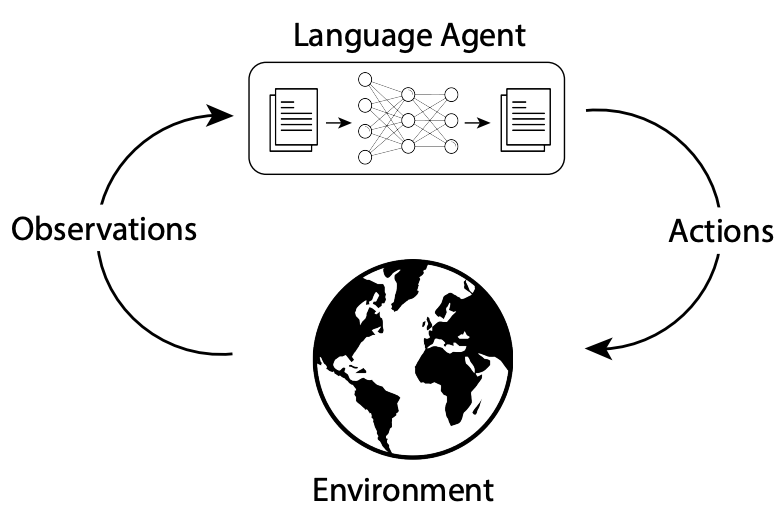
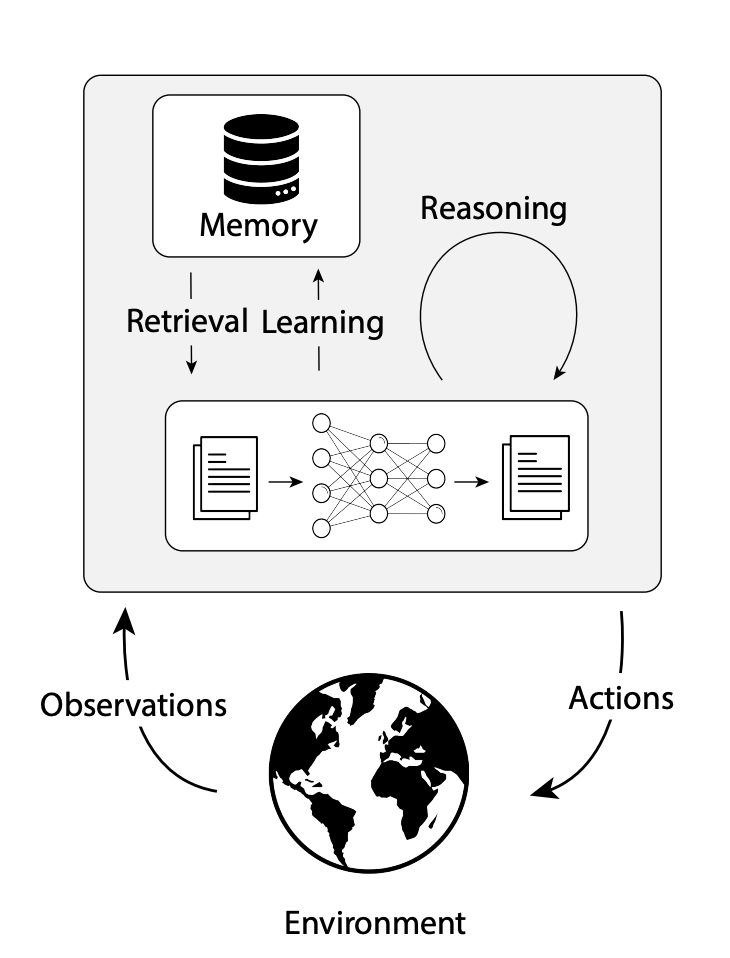
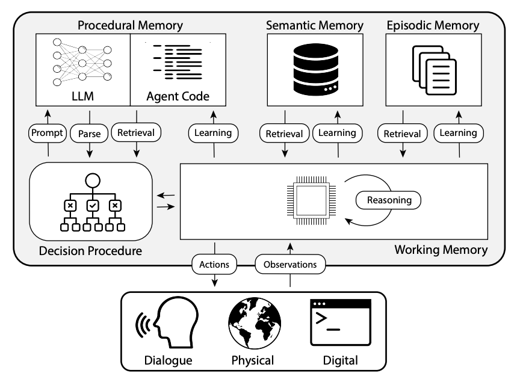

In the previous modules, you learned the foundational building blocks of modern AI applications:
Module 1 introduced you to Large Language Models (LLMs)—powerful AI systems capable of understanding and generating human language. LLMs excel at reasoning, summarizing, answering questions, and more, but they operate within certain boundaries: they have no persistent memory, cannot access external tools or data, and do not act autonomously.
Module 2 explored the art and science of prompt engineering—the practice of crafting clear, effective instructions to get the best results from LLMs. With strong prompt engineering, you can build surprisingly capable applications using just an LLM, without any additional complexity.
This module builds on your understanding of LLMs and prompt engineering, showing you how to design and build agents that can remember, reason, use tools, and act autonomously—unlocking a new level of capability for your AI applications.
What You'll Learn
In this course, we focus specifically on agentic LLM applications that leverage Large Language Models as their core reasoning engine. This represents a modern approach to agent design, with unique capabilities and limitations.
Agent Fundamentals: The key characteristics that define agents
When to use Agents: What makes agents different from Single-Step or Workflow-Based LLM applications.
Memory: Types of memory and how agents use them
Tools: How agents use external tools to extend their capabilities
Decision Cycle: How agents observe, plan, and act in iterative loops
Agent Patterns: Different agent patterns and production considerations
💡Tip: No matter if you're building a simple LLM-powered app or a sophisticated agent system, every successful AI solution depends on clear, well-crafted prompts - even the most advanced agents rely on clear, well-structured prompts to guide the LLM's reasoning and actions.
Historical Context
The concept of agents in AI dates back to the 1950s with early work in cybernetics (the study of control systems and information processing in both machines and living organisms) and the development of the first AI programs. The Turing Test, proposed by Alan Turing, established a framework for evaluating if machines could exhibit human-like intelligence—though not specifically defining "agents" as we understand them today.
In the 1980s and 1990s, the agent paradigm became more formalized in AI research, with researchers developing various types of agents from simple reactive systems to more complex deliberative architectures.
Traditional AI literature identifies several key characteristics of agents:
Autonomy: The ability to operate without direct human intervention
Reactivity: The ability to perceive and respond to changes in the environment
Pro-activeness: The ability to take initiative and pursue goals
Social Ability: The ability to interact with other agents or humans
However, it's crucial to understand that these characteristics exist on a spectrum rather than as binary attributes.
Rather than thinking of agency as binary (either something is an agent or it's not), it's more helpful to consider a spectrum of agency, varying from highly supervised to fully autonomous.
What is an Agent?
An agent is a system that perceives its environment through sensors, processes this information, and acts upon the environment through actuators to achieve specific goals. Today, this same principle applies to LLM-powered agents, but with digital sensors and actuators:
Sensors → Text inputs, API responses, database queries, and file contents
Processing → LLM reasoning combined with memory and planning systems
Actuators → Tool calls, API requests, text generation, and system commands
From LLMs to Agents: Why Go Further?
While LLMs are incredibly versatile, many real-world applications require more than just language understanding. This is where LLM-powered agents come in.
🤖Agentic LLM application is a software system that wraps around the LLM, operating in a loop—observing its environment, using the LLM's reasoning to decide what to do next, and taking actions to achieve its goals.
LLM-powered agents build upon the foundation of Large Language Models by extending them with critical capabilities:
Tool Use: While base LLMs can only process and generate text, LLM-powered agents can interact with the world by using external tools, APIs, and services to retrieve information or perform actions.
Persistent Memory: Unlike base LLMs limited to their context window, agents remember past actions, user preferences, or important facts (short-term and long-term). They can also use it to improve future actions.
Orchestration Logic: Coordinates when and how to use the LLM, tools, and memory within each decision cycle, enabling adaptive, multi-step workflows.

Figure: Core components of an LLM-powered agent. The agent orchestrates tool use, memory, and a decision cycle in response to user requests or tasks.
These three capabilities transform LLMs from reactive language models into semi-autonomous systems that can reason, remember, and act to accomplish complex real-world tasks.
⚡
For the remainder of this module, "agents" refers to Agentic LLM applications. The key differentiator from Single-Step or Workflow Based LLM Applications is the use of LLM for orchestration, and optionally, persistent memory for feedback loop and learning. These require careful engineering and enable agents to adapt to handle complex tasks flexibly at the cost of increased implementation complexity.
The Engineering Challenge: From Prompts to Orchestration
While prompt engineering remains important, building LLM-powered agents shifts the primary engineering focus to orchestration design:
Decision Logic: When should the agent call external tools versus generate responses using the LLM's training knowledge? How does it choose between multiple available tools for the same task?
Error Handling: What happens when a tool call fails, returns incomplete data, or produces unexpected results? How should the agent recover and continue?
Memory Operations: What information should be stored after each interaction? When should past information be retrieved and used? How should conflicting information be handled?
Loop Termination: How does the agent determine when a task is complete versus when to continue the decision cycle? What prevents infinite loops?
This orchestration logic varies dramatically by use case - a research agent needs different decision patterns than a customer service agent or a data analysis agent. The engineering complexity lies in designing these control flows rather than just crafting prompts.
Agentic LLM Applications: When Are They Needed?
Not every application needs the complexity of an agent. Many tasks—like summarization, classification, or Q&A—can be solved with just prompt engineering and an LLM.
However, agents become essential when achieving your goals requires handling multi-step complex tasks and the workflow cannot be fully specified in advance—demanding adaptive, dynamic decision-making.
Guiding Principles for Using Agents:
Don't Build Agents for Everything: Use agents only for complex, ambiguous, high-value tasks; prefer Single-Step or Workflow-Based LLM Applications for simple cases.
Keep It Simple: Start with a minimal architecture (environment, tools, prompt); iterate before adding complexity.
The following table compares traditional workflows, single-step or workflow-based LLM applications, and agentic LLM applications to help clarify when each approach is most appropriate.
Dimension
Traditional Workflows
Single-Step or Workflow Based LLM Applications
Agentic LLM Applications
Visual




Description
Software systems with predefined logic and workflows
Applications that use LLMs in one or more fixed, code-defined steps—each step may involve an LLM call or tool, but the workflow is predetermined and not dynamically chosen by the LLM.
Systems operating in a loop—observing its environment, using the LLM's reasoning to decide what to do next, and taking actions to achieve its goals
Implementation Complexity
Medium-High (requires specific logic for each task)
Low-Medium (prompt engineering plus predefined integrations)
High (requires orchestration, tool integration, memory systems)
Applications & Examples
Well-defined processes: order processing, data validation, reporting
Tasks solved by running the LLM in one or more fixed, code-defined steps—such as content creation, simple chatbots, text-to-SQL, or multi-step data processing—where the workflow and tool use are predetermined and not dynamically chosen by the LLM.
Complex tasks requiring multiple steps reasoning, external data, or persistent context. Customer service agents, research assistants, automated analysts
Autonomy
Limited within predefined rules and predetermined logic
Limited within LLM reasoning and predefined tool usage patterns
Semi-autonomous with LLM orchestrating tool selection and execution based on goals and context
Reactivity
Responds to specific triggers and data changes
Responds to user prompts with enhanced context
Responds to environmental changes and adapts strategy accordingly
Pro-activeness
Follows predetermined paths without initiative
Reactive within single interactions, no cross-session initiative
Takes initiative to pursue goals across multiple steps and sessions
Social Ability
Structured interactions with predefined interfaces
Natural language conversation with enhanced responses
Multi-turn dialogue with context awareness and goal persistence
Tool Integration
Pre-programmed connections to specific systems
Predefined tool usage (RAG integrations, LLM output as tool input)
LLM decides which tools to use; orchestrated tool selection with feedback loops
Memory Management
Database-driven with explicit schema design
Context window concatenation (limited to context window size)
Persistent across sessions with both short and long-term storage
Reasoning Process
Linear, rule-based or algorithmic
Single-step or multi-step reasoning per interaction (may use CoT, ToT, ReAct within prompts)
Multi-step reasoning across interactions with planning and feedback loops
Example: Document Extraction
Traditional Workflow: Extracts fixed fields from one type of document that always follows the same structure (e.g., always pulls "Name" and "Date" from a standard lease form).
Single-Step or Workflow-Based LLM Applications: Can flexibly extract different fields based on the prompt, but still processes one document at a time and does not adapt its process or use external tools.
Agentic Application: Can interact with tools to translate documents, convert between different document types, and extract relevant fields—even adapting its approach based on the document's structure or missing information.
Single-Step LLM Application
This code sends a prompt to a language model to extract specific fields from a lease document in a single step. It highlights how prompt engineering alone enables flexible information extraction without any additional logic or memory.
import boto3
import json
# Set up Bedrock client
bedrock = boto3.client("bedrock-runtime", region_name="us-east-1")
def extract_fields(document):
prompt = (
"Extract the following fields from this lease document: Tenant Name, Lease Start Date, Rent Amount.\n\n"
f"Document:\n{document}\n\nFields:"
)
body = json.dumps({
"prompt": prompt,
"max_tokens_to_sample": 200,
"temperature": 0
})
response = bedrock.invoke_model(
modelId="anthropic.claude-3-sonnet-20240229-v1",
body=body
)
result = json.loads(response["body"].read())
return result["completion"].strip()
# Example document
doc = "This lease is made between John Doe and ACME Corp. Lease starts on 2024-07-01. Monthly rent is $2,500."
# Run the extraction
result = extract_fields(doc)
print(result)
Agentic Application
This code first checks if a lease document is in English or Spanish, then uses a single prompt to instruct the language model to translate to English if needed and extract key fields. It illustrates how an agent can handle multilingual input and autonomously solve a multi-step task by leveraging LLM reasoning and prompt design.
import boto3
import json
# Define your tools
def translate_to_english(text):
# Dummy translation for demo; in real use, call an API or LLM
if "Este contrato" in text:
return "This lease is made between John Doe and ACME Corp. Lease starts on 2024-07-01. Monthly rent is $2,500."
return text
def extract_fields(text):
# Dummy extraction for demo; in real use, call an LLM
if "John Doe" in text:
return "Tenant: John Doe, Start Date: 2024-07-01, Rent: $2,500"
return "Fields not found"
# Build prompt for Claude
# Tool registry
TOOLS = {
"translate_to_english": translate_to_english,
"extract_fields": extract_fields,
}
# Bedrock client
bedrock = boto3.client("bedrock-runtime", region_name="us-east-1")
def call_claude(prompt):
body = json.dumps({
"prompt": prompt,
"max_tokens_to_sample": 200,
"temperature": 0
})
response = bedrock.invoke_model(
modelId="anthropic.claude-3-sonnet-20240229-v1",
body=body
)
result = json.loads(response["body"].read())
return result['content'][0]['text'].strip()
def agent_decision_loop(document):
history = []
while True:
#Build prompt for Claude
prompt = (
"Your goal: Extract the tenant name, lease start date, and rent amount from the provided lease document. "
"If the document is not in English, translate it to English first.\n\n"
"You are an agent that can use the following tools:\n"
"- translate_to_english(text): Translates text to English if needed.\n"
"- extract_fields(text): Extracts tenant name, lease start date, and rent amount from an English lease document.\n\n"
f"Document: {document}\n"
f"History: {history}\n"
"What should you do next? Reply with:\n"
"Action: '<'tool_name'>'\n"
"Action Input: '<'input'>'\n"
"or\n"
"Final Answer: \n"
)
output = call_claude(prompt)
print("Claude Output:", output)
if output.startswith("Final Answer:"):
return output[len("Final Answer:"):].strip()
elif output.startswith("Action:"):
lines = output.splitlines()
action = lines[0].split(":", 1)[1].strip()
action_input = lines[1].split(":", 1)[1].strip()
result = TOOLS[action](action_input)
history.append({"action": action, "input": action_input, "result": result})
document = result # For this simple example, update document for next step
else:
return "Agent did not understand what to do."
# Example usage
spanish_doc = "Este contrato de arrendamiento es entre John Doe y ACME Corp. Comienza el 1 de julio de 2024. La renta mensual es de $2,500."
print(agent_decision_loop(spanish_doc))
Memory: Retaining and Utilizing Information
What is Memory in AI Agents?
Memory enables an agent to remember, reason, and act based on past interactions, knowledge, and goals. For chatbots and digital agents, memory is essential for holding context, learning from conversations, and improving over time.
Analogy: Just as people remember recent conversations, facts, and how to perform tasks, agents use different types of memory to be helpful and context-aware.
Memory Types in Language Agents
1. Working Memory: What the agent is thinking about right now
Definition: Working memory is the agent's "active desk"—it holds all the information the agent needs right now to make decisions and respond. This includes:
The current user message and recent conversation history
Any goals or tasks the agent is working on
Facts or context retrieved from long-term memory for the current turn
Key Points:
Working memory is refreshed every decision cycle (e.g., each time the agent responds)
It is the main input to the LLM for generating a response
After the LLM responds, new information (actions, decisions, updated goals) is stored back in working memory for the next cycle
Analogy: Like having all the notes and materials you need on your desk while working on a homework assignment—everything you need right now is in front of you and easy to use.
2. Long-Term Memory: What the agent has experienced before and knows as facts
Long-term memory is where the agent stores information it may need in the future, even after the current conversation or task is over. It has two main types:
Type
Description
What it Stores
Example in Chatbots/Agents
Episodic
Recall what happened in previous chats or tasks
Specific experiences and events
Past conversations, user preferences, previous actions taken
Semantic
Lookup facts or knowledge to answer questions or make decisions
General knowledge and facts
Company policies, product info, FAQs, world knowledge
Tip: Vector databases—such as Pinecone, FAISS, Amazon Kendra and PostgreSQL with pgvector—are commonly used to implement long-term or semantic memory in modern AI agents, enabling fast retrieval of relevant information based on meaning. For more on choosing a vector database for AI use cases, see the AWS Prescriptive Guidance on vector databases.
Analogy: Episodic memory is like your chat history or diary; semantic memory is like your personal wiki or knowledge base.
3. Procedural Memory: How the agent knows what to do and how to do it
Procedural memory is how the agent knows what to do and how to do it.
Implicit procedural memory: The skills and reasoning built into the LLM itself, encoded in the model's weights.
Explicit procedural memory: The agent's code, prompt templates, and programmed workflows (e.g., how to escalate a support ticket, how to call an API).
Key Points:
Procedural memory is set up by the agent designer (the developer).
It can be updated, but changes must be made carefully to avoid bugs or unintended behavior.
Analogy: Implicit is like knowing how to ride a bike; explicit is like following a recipe or checklist.
How These Memories Work Together
Working memory is the "hub" for each decision: it brings in the current message, retrieves relevant info from long-term memory, and uses procedural memory to decide what to do.
Episodic and semantic memory are "archives" the agent can search for relevant past events or facts.
Procedural memory is the "how-to manual" and skillset the agent uses to act.
Memory Architecture Visualization

This diagram shows how working memory, long-term memory (episodic and semantic), and procedural memory interact in a language agent. Working memory is the central workspace, connecting the agent's reasoning, actions, and memory systems.
User: "Last time I chatted, you gave me a troubleshooting tip. What was it?"
Agent's working memory: Holds the current question and user ID.
Agent's episodic memory: Retrieves the specific advice or troubleshooting tip given in the previous conversation with this user.
Agent's semantic memory: Knows general troubleshooting procedures and device information.
Agent's procedural memory: Uses a programmed workflow to guide the user through troubleshooting steps.
Memory Type Breakdown:
Episodic memory: "In your last chat, I suggested you restart your router."
Semantic memory: "Restarting the router is a common fix for connectivity issues."
Procedural memory: The step-by-step process the agent uses to walk the user through restarting the router.
Tools: Extending the Agent's Capabilities
2.1 Tools: Extending the Agent's Capabilities
What Are Tools in the Context of AI Agents?
Tools are specialized functions that enable AI agents to perform specific tasks beyond text generation, connecting them to external systems and capabilities. They serve as the interface between an agent's decision-making capabilities and the real world.
Key Analogy: An LLM is like a brain, and tools are its limbs and senses - they allow the agent to interact with and perceive the world around it.
Why Tools Are Essential for Agent Capabilities
LLMs have four key limitations that tools help overcome:
Knowledge Cutoff: LLMs only know information they were trained on
Data Manipulation: LLMs struggle with complex calculations
External Interaction: LLMs can't access current information or systems
Verification: LLMs can't verify outputs against real-world data
Tools transform a passive text generator into an active agent by providing:
Real-time information access
Computational capabilities
External system integration
Output verification mechanisms
2.2 Types of External Environment Interactions
Interaction Pattern
Description
When to Use
Example
Direct Function
Agent executes local functions
Simple operations with no external dependencies
Calculator, text formatting, local data processing
External
Agent connects to APIs or triggers workflows
Real-time data, integrations, or external actions
MCP Servers, Weather API, Slack Webhooks
Database Retrieval
Agent queries databases for information
Working with persistent structured data
Customer records, product catalogs, transaction history
Code Execution
Agent generates and runs code
Complex computational tasks requiring flexibility
Data analysis, visualization generation, algorithm implementation
Human Interaction
Agent collaborates or escalates to a human
Tasks requiring judgment, approval, or clarification
Escalating support tickets, requesting user input, human-in-the-loop review
2.3 Key Principles for Building Agent Tools
Building effective tools for AI agents requires careful consideration of how agents interact with and understand tools. Here are five key principles:
1. Speak the Agent's Language
Design your tool description in clear natural language that helps the agent understand exactly when and how to use it.
❌ "API for meteorological data retrieval"
✅ "Get current weather conditions for any location by city name or zip code"
2. Right-Size Your Tools
Create tools that do one job well, not too granular (requiring too many calls) or too broad (causing confusion about purpose).
❌ Generic "DatabaseTool"
✅ Specific tools like "CustomerLookup" and "OrderHistory" with clear, distinct purposes
3. Structure for Success
Design inputs and outputs to make the agent's job easier, with intuitive parameter names and results formatted for easy reasoning.
❌ Generic parameters like "input1" and "input2"
✅ Descriptive parameters like "sourceText" and "targetLanguage"
4. Fail Informatively
Return helpful error messages that guide the agent toward correction rather than confusion.
❌ "Error 404"
✅ "Location 'Atlantis' not found. Please provide a valid city name or zip code"
5. Prevent Hallucinations
Provide factual, verifiable outputs that reduce the likelihood of the agent making things up.
❌ Empty results that might lead to invented details
✅ "No information available about product XYZ-123"
Decision Cycle: Observe, Plan, and Act
In the context of AI agents for digital applications (like chatbots, virtual assistants, or workflow automation), the decision cycle is the repeating process an agent uses to understand, reason, and act—much like how a human knowledge worker would handle a task.
What is the Decision Cycle?
This diagram illustrates how the agent's memory, tools, and decision logic interact in a continuous decision cycle, enabling the agent to observe, plan, and act in digital environments.
The decision cycle is a loop where the agent:
Observes the current situation (e.g., receives a user message or new data).
Plans what to do next by combining what it knows (memory), what it can do (tools), and the current goal.
Acts by generating a response, calling a tool, retrieving information, or escalating to a human if needed.
After acting, the agent updates its memory and starts the cycle again for the next input or task. The agent's "brain" (the LLM and its code) brings together memory and tools to decide the best next step in each cycle.
Orchestration in the Agent Decision Cycle
In agentic LLM applications, orchestration is key: the agent coordinates memory, tool use, and LLM reasoning within each decision cycle.
The agent actively manages when to retrieve context, when to call tools, and when to leverage the LLM for reasoning or generation.
This orchestration enables adaptive, multi-step workflows and robust integration with external systems.
Building Agents: Do You Need a Library?
You don't strictly need a library to build an agent—at its core, an agent is a software system that manages memory, tool use, and decision logic around an LLM. However, building a robust agent from scratch can be complex and time-consuming.
Popular open-source agent frameworks include:
LangChain (Python, JS): Modular framework for building agentic LLM applications with memory, tools, and workflows.
CrewAI: Focuses on multi-agent collaboration and workflow orchestration.
Autogen (Microsoft): For building multi-agent and tool-using systems.
🛠️Note: These frameworks provide reusable components, integrations, and best practices that can greatly simplify the development effort needed to build safe production-grade agents. However, the decision to incorporate such frameworks should be carefully evaluated based on your specific use case, complexity, and production requirements.
Example (Customer Support Chatbot)
Observe: The user asks, "What's my order status?"
Plan: The agent checks its memory for recent orders, decides it needs up-to-date info, and chooses to use an external tool (API) to fetch the order status.
Act: The agent retrieves the status and replies, "Your order is out for delivery and should arrive today."
The agent then updates its memory with this interaction, ready for the next question.
Agent Patterns
Agentic LLM applications can be implemented in various ways depending on the application needs. Here are some of the patterns you'll encounter:
Pattern
Description
Best For
Example
Conversational Agents
One agent handles multi-turn conversations with users
Customer service, personal assistants, Q&A systems
ChatGPT-style interfaces, support chatbots, coding assistants etc.
Task-Oriented Agents
Designed to complete specific workflows or objectives, including those requiring interaction with browsers, desktop applications, or system interfaces
Automated analysis, report generation, document handling, web automation, and more
Market research agent, inventory analysis agent, web scraping agent, automated testing agent
Multi-Agent Systems
Multiple specialized agents collaborate on complex tasks
Complex workflows requiring different expertise areas
Research team (data gathering, analysis, reporting)
Human-in-the-Loop Systems
Require human approval for key decisions or actions
High-stakes decisions, regulated environments, building trust
In this module, you learned how modern AI agents are designed to go beyond simple text generation. You explored:
The fundamentals of what makes an AI agent, including the importance of memory, tools, and the decision cycle
How agents use different types of memory (working, episodic, semantic, procedural) to remember, reason, and act
The various ways agents interact with external environments using tools and integration patterns
The decision cycle as the core loop that enables agents to observe, plan, act, and learn—mirroring the way human knowledge workers handle tasks
The importance of separating the agent's orchestration logic from the LLM's language and reasoning capabilities, and how frameworks like LangChain, CrewAI, and others can help you build robust, production-ready agents
By understanding these concepts, you're now equipped to design and build AI agents that can autonomously assist, augment, or automate knowledge work in digital applications.
Resources
CoALA: Cognitive Architectures for Language Agents arXiv PDF – A comprehensive survey of cognitive architectures for language agents, including memory, planning, and tool use.
Amazon Bedrock Agents Documentation AWS Bedrock Agents – Official AWS documentation for building, orchestrating, and deploying agents with memory, tool use, and multi-agent collaboration.
LangChain Documentation LangChain Docs – The most popular open-source framework for building agents with memory, tools, and workflows.
CrewAI CrewAI GitHub – Open-source framework for multi-agent collaboration and workflow orchestration.
Microsoft AutoGen AutoGen GitHub – Framework for building multi-agent and tool-using systems.
LLM Orchestration: Strategies, Frameworks, and Best Practices Label Your Data – Overview of orchestration concepts, frameworks, and best practices for agentic systems.
LLM Orchestration in the Real World: Best Practices CrossML Blog – Practical strategies and production insights for orchestrating agents.
IBM: LLM Agent Orchestration Guide IBM Think Tutorial – Step-by-step guide to agent orchestration with modern frameworks.
How We Build Effective Agents: Barry Zhang, Anthropic YouTube Video – Practical insights and strategies for building effective agentic LLM applications from an Anthropic engineer.
Concept Check Questions
Which memory type is responsible for remembering the user's last support ticket?
A) Episodic memory
B) Semantic memory
C) Procedural memory
Explanation: Episodic memory stores specific experiences and events, such as previous support tickets.
What is the primary difference between an LLM and an AI agent?
a) LLMs are less advanced than agents
b) Agents actively take actions and use tools to achieve goals
c) LLMs cannot understand human language
d) Agents do not use language models
Explanation: b) Agents actively take actions and use tools to achieve goals.
True or False: AI agents are always fully autonomous and require no human intervention.
a) True
b) False
Explanation: b) False. Many agents operate with varying degrees of autonomy and may require human oversight or intervention at different points in their operation.
Which of the following is the core capability that distinguishes agentic LLM applications from single-step or workflow-based LLM applications?
A) Ability to use external tools
B) Persistent memory across interactions
C) Multi-step adaptable orchestration logic
D) Generating images from text prompts
Explanation: C) Multi-step adaptable orchestration logic is the core capability that distinguishes agentic LLM applications from single-step or workflow-based LLM applications.
Which of the following best describes the agent decision cycle in a digital personal assistant?
A) The agent only responds to user input without using memory or tools
B) The agent observes, plans, acts, and updates its memory in a repeating loop
C) The agent always escalates to a human for every task
D) The agent only uses pre-programmed responses
Explanation: B) The agent observes, plans, acts, and updates its memory in a repeating loop.